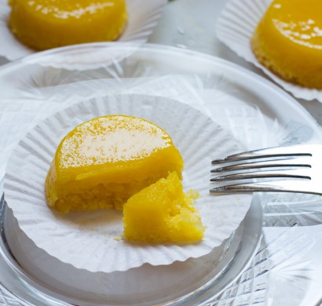

Quindim

These Brazilian treats feature a rich eggy custard
on the top and a chewy coconut crust on the bottom.
Both crust and custard come from a single batter:
The macaroon-like crust forms as the shredded coconut
floats and browns while baking; once cooled, the desserts
are inverted, revealing the shiny, sunny custard layer.
White sugar will result in sunny yellow custard, while light
brown sugar will tint it pale gold. Be sure to allow the quindim
to cool—and fully set—completely before flipping the muffin tray.
Ingredients
- 12 large egg yolks
- 1 3/4 cups granulated sugar or light brown sugar
- 6 ounces frozen unsweetened shredded coconut (about 1 1/2 loosely packed cups), thawed
- 2 tablespoons unsalted butter, melted, plus softened butter for greasing muffin tin
- 1/4 teaspoon kosher salt
- 2 large egg whites
- Hot water, as needed
Preparation
- Preheat oven to 350°F. Grease a 12-cup standard muffin tin with softened butter; set aside. Using a rubber spatula, press egg yolks through a fine wire-mesh strainer into a medium bowl; set aside.
- Stir together sugar, coconut, melted butter, and salt in a medium bowl. Gradually add egg yolks in 4 additions, stirring well after each addition. Whisk egg whites in a separate medium bowl until stiff peaks form, 1 to 2 minutes. Fold egg whites into coconut mixture.
- Divide coconut mixture evenly among prepared muffin cups (about 1/3 cup each). Place muffin tin in a large, sturdy roasting pan; add hot water to pan to come halfway up sides of muffin cups. Carefully transfer to preheated oven. Bake until quindim are set and tops are golden brown, 34 to 38 minutes. Carefully remove quindim from oven. (Leave oven on.) Remove muffin tin from pan; leave water in pan, and set aside. Let quindim cool completely on a wire rack, about 1 hour. During last 10 minutes of cooling, return roasting pan with water to oven. (You will use the hot water to help loosen the quindim from the muffin tin.)
- Remove pan with water from oven. Run a small offset spatula around sides of each quindim to loosen from muffin tin. Carefully dip muffin tin into hot water for 5 seconds to loosen quindim. Invert muffin tin onto a baking sheet, and tap on counter to release quindim from muffin tin. Serve at room temperature or chilled.